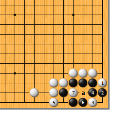
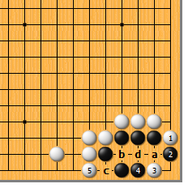
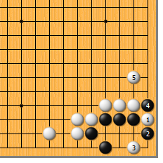
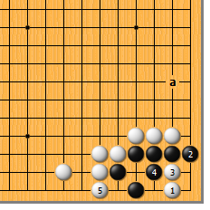
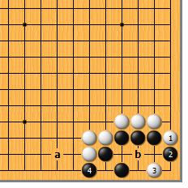
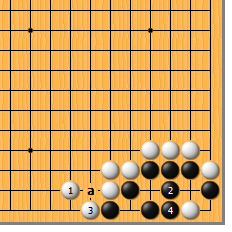

|  |  | |
| 图1 此形唤作“大猪嘴”。白1扳、3点，黑4粘时，白5立是手筋。黑6如顶，白7扑，黑死。黑4如a位做眼，白5仍立。 | 图2 白3点时，黑4顶住也不行。白5仍然立，以后黑如a位粘，白b位扑；黑如c位粘，白d位吃 黑接不归。
| |
|  |  | |
| 图3 白3点时，黑4提如果是先手怎么办？不用担心，白5大大方方地应就是了，黑4的提与死活无关。 | 图4 就局部而言，白1直接点黑也不行。黑2立，白3并，黑4做眼时，白5立，黑死。不过黑如将来a位一带有子，便可暗渡陈仓，故白不好。
| |
|  | ||
图5 白1点时，黑2先扳。对此，白3必须马上扑，黑4提时，白5再回补，如此黑仍死。白3如先于5位跳，黑a位顶，白3扑时，黑b位再顶，黑就活了。
| 图6 现在a位白少一子。白1扳、3点时，黑4扳！如果a位有子，白当然可以b位尖，如此黑死。在黑4扳是先手的时候，情况就有所不同…… | |
|  | 您的高见 | |
图7 现在白1不得不补。黑2做眼，白3虎下，黑4团，开始打劫。白1如直接于3位挡，黑可a位连根切断。 | 棋谚云：“大猪嘴，扳点立”。 |